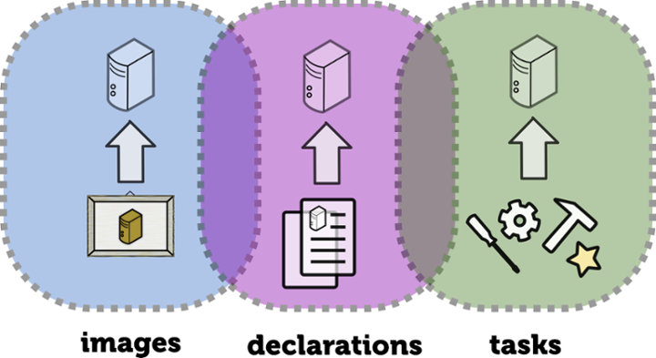
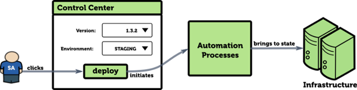
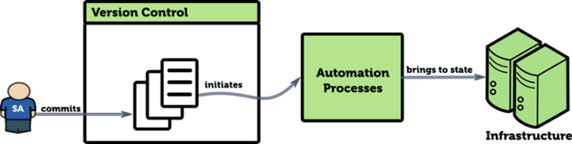

Collection of patterns (and antipatterns) for
Work in progress (never done).
Feedback is more than welcome!
Infrastructure-as-Code (IaC) is a type of IT infrastructure
Images, declarations, tasks

Image defitions
Provisioning declarations
Automation scripts
Image creation/management: Packer, Docker, AWS AMI/EC2 etc.
State declarations: Puppet, Chef, Ansible etc.
Automation blocks: SSH, API + <your favorite scripting language>
Code "deployment" (one click away)

Code "deployment" (one commit away)

Antipattern: Golden Image
Manually crafted base infrastructure server image that nobody dares or knows how to change.
Pattern: Reproducable Images
Operating system distributions (*.iso).
Base provider images.
Packer can create images for many virtualization software and cloud providers.
Docker can build and package containers as images for distribution.
Pattern: Secret Isolating
Everything is code, but secrets are not!
Secrets should reside in a separate location!
Secrets should be injected on the very last stage of "deploying" your code.
In this way the actualy code still remains sharable.
Pattern: Ecrypted Secrets
Shared secrets must be encrypted!
Well, all stored secrets must be encrypted!
Decryption password is shared through a different channel.
Encrypt hard drives
Encrypt files in version control
Encryption options: Transcrypt
OpenSSL + Transcrypt (https://github.com/elasticdog/transcrypt) :
> cd <path-to-your-repo>/
> transcrypt
> echo 'sensitive_file filter=crypt diff=crypt' >> .gitattributes
> git add .gitattributes sensitive_file
> git commit -m 'Add encrypted version of a sensitive file'
Antipattern: Postponing Secret Isolation
"It's OK for now" does not really work!
It creates a culture of security being not so important!
It may alienate your Dev and Ops teams, because they can't share code due to hard-coded secrets!
Pattern: Infrastructure Component DSL
Nobody knows your domain better than you!
You can write your own DSL or you can leverage existing tools.
The main thing is to group infrastructure configuration into reusable components.
That's what we do with application code, that's what we should do with IaC!
system1 {
http_proxy {
cache=true
http_application {
param1=A
}
}
database {
memory=3GB
}
Bash, Perl, Python, Groovy,... anything works.
Though, Puppet, Chef, Ansible provide facilities to define and group abstractions.
Antipattern: "Fancy-File-Copying"
To configure package X, you keep all configuration files it needs within your "code".
You use provisioning tool abstractions to copy every single file onto the target system.
nginx.conf
mime.conf
servers.conf
params.conf
nginx.pp | nginx.rb | nginx.yml
Well, there are much simpler ways to copy files.
You actually hide your intent and the goal of your configuration.
File and package are not always the right abstractions.
Upstream Server
Virtual Host
Static Directory
System Wide Setting
Pattern: Incremental Configuration
Many packages will already be on the system in their default state.
Instead of duplicating default state in your code, you can only define an incremental change.
Disallow root access on the system
Set SELinux into permissive mode
Set default caching timeout in Nginx
Generic: sed, perl, regular expressions
Puppet: file_line, augeas
Ansible: lineinfile, replace
Chef: ruby
Pattern: Configuration Composition
Compose your configuration of several template or API call blocks.
Expose abstractions through configuration blocks.
Puppet: concat module
Ansible: assemble module
Chef: partials
Pattern: Configuration Discovery
Part or all of system configuration is distributed through auto-discovery mechanism.
This cleans your IaC from storing specifics. Define keys instead of values.
Basically, "convention over configuration" for your cluster.
Pattern: Extra-Packaging Code
Package your application in the most approriate format that is ready for the most hassle-free deployment.
Publish it to artifact repository (Maven, RubyGems, Yum, Apt...).
Artifact repository serves as a layer of isolation between pipelines.
Reduces amount of code needed on later stages of configuration management.
Application can be packaged differently
jar|gem|pyc|...
tar.gz|tar.bz2|zip|...
rpm|deb|msi|...
server|container image
Antipattern: Data as Code
Data has different lifecycle. It's more dynamic.
Data changes more often than code.
Example 1: use your provisioning tool to define organization users.
Example 2: manifest that lists all your 500 servers.
Pattern: Configuration Data Source
Useful when number of managed items exceeds certain amount.
Data file (Text, Excel, etc.)
Database (PuppetDB etc.)
Service API
Antipattern: Ignoring Styling Guidelines
Each tool/language out there has one.
Nobody canceled clean code teachings.
Reading, writing and eventually merging code is always easier if people follow the same formatting and styling.
Antipattern: Not Treating IaC as Code
Code must be in Version Control .
Lack of experience with new tool may Code Reviews .
Yes, there are tools for Static Code Analysis even for IaC products.
Unit testing does not make a lot of sense for IaC, but Integration Testing does.
Applying all the above techniques gives the best QA result for any code.
Since it's code, then developers can, should and will write it without involving operations.
DevOps is a brilliant term, since it emphasises that all starts with developers.
But one should not forget about those guys who actually keep the systems running.
Metrics that your application provides evolve with your application.
New components, new endpoints, new KPIs...
Keep monitoring configuration close to the code!
Or make it auto-discoverable and visible!
Configuring and collecting metrics
Monitoring software has configuration files and/or an API that can be programmed.
There a plenty of libraries that allow making monitoring a built-in feature of your application.
DropWizard Metrics
Hystrix
StageMonitor
Pattern: Control Panel as Code
Repeatable things live well in scripts.
Scripts can (and will) be well executed by your CI server (or any other UI you can build around your automation).
Effectively, that server becomes your "control panel".
Keep configuration of your "control panel" in version control.
Antipattern: Private Fork of a Community Module
There is a lot of code out there.
Private fork may work as a short-term solution.
Do not keep your updates only to yourself. Share them back.
Pattern: Community Module Wrapper
It's better to create a wrapper.
This simplifies upgrades.
And tracebilty.
Antipattern: "Other Stuff"
Team members do not fully understand the logic behind code organization.
They still are eager to contribute, but when they actually do, they break it.
Pattern: Infrastructure Query Language
Language or API that allows to query your infrastructure state (real time or last available report).
Examples: AWS EC2 API, PuppetDB, MCollective, Salt
Pattern: Automation over Documentation
It's quite common that Ops team have been given or have created a bunch of documents describing procedures for system operations.
Code can do better!
It happens that writing those documents take as much time as writing and testing code that implement the same guide lines.
Automating procedures can reduce the amount of documentation needed or eliminate the documentation completely.
Pattern: Environment Template
Define template from which you can create a fully working environment.
It gives scaling.
It gives isolation.
It gives flexibilty.
Vagrant
AWS Cloud Formation
Docker and Docker Compose
Kubernetes API
Antipattern: Big Ball of Mud
Well, it's possible to create mess out of anything.
Pattern: Reproducable Images
Pattern: Secret Isolating
Pattern: Ecrypted Secrets
Pattern: Infrastructure Component DSL
Pattern: Incremental Configuration
Pattern: Configuration Composition
Pattern: Configuration Discovery
Pattern: Extra-Packaging Code
Pattern: Configuration Data Source
Pattern: Metrics as Code
Pattern: Control Panel as Code
Pattern: Community Module Wrapper
Pattern: Infrastructure Query Language
Pattern: Automation over Documentation
Pattern: Environment Template
Antipattern: Golden Image
Antipattern: Postponing Secret Isolation
Antipattern: "Fancy-File-Copying"
Antipattern: Data as Code
Antipattern: Ignoring Styling Guidelines
Antipattern: Not Treating IaC as Code
Antipattern: DevOoops
Antipattern: Private Fork of a Community Module
Antipattern: "Other Stuff"
Antipattern: Big Ball of Mud
Write a blog post!
Share a tweet with @codingandrey or #iacpatterns.
Or just write me to andrey@aestasit.com .